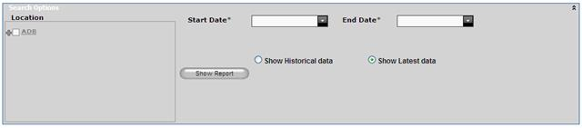
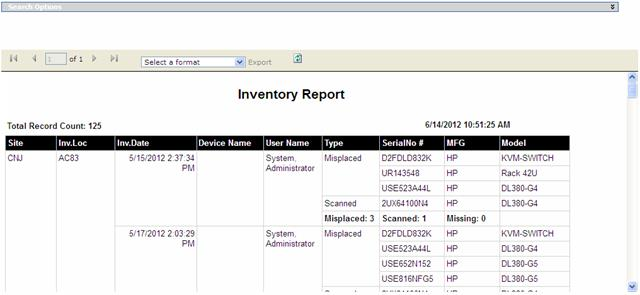

Audit Report
Audit report shows inventory details performed using DCTrackMobile application. This data will give full details of inventory such as inventory location, date and time, total assets expected, scanned count, missing count and misplaced count, user who did the inventory and device used for inventory.
To view Audit report,
1. Navigate Reports>> Audit Report in the DCTrackMobileWeb menu bar.
You will see the Audit Report screen.

Figure 145: Asset History Report screen
2. Provide the required information.
3. Show Historical data shows all the data between two specified dates. Show Latest data shows only the latest inventory data which is not updated using Inventory Update page.
4.
Click Show report  button to display the report.
button to display the report.

Figure 146: Inventory report with data